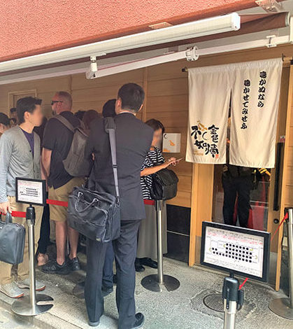

Café Eiles
When in Austria stop by Café Eiles in Vienna, for some Apfelstrudel! Learn more about the history of Café Eiles on their website:
Click here for more on Café Eiles
Chez Léon
If you are in Belgium be sure to grab some Moules Frites at Chez Leon. Learn more about this resturant by
clicking her!
Fritz European Fry House
Get yourself some delicious Poutine at Fritz European Fry House in Vancouver, British Columbia. Although this resturant doesn't have a website they have an awesome instagram. To view it,
Click here!
Heft
Want the full England experience? Stop by Heft, Lake District for some Steak and kidney pie! Reserve a table today by,
Clicking here!
Restaurant Saaga
If you want a true taste of Finland stop by Restaurant Saaga for some “squeeky cheese“ also known as Leipäjuusto. Check their website to see some of their delish dishes by
Clicking here!
Beefy's Aussie World
Hello Mate! You must grab s mest pie at Beefy’s when in Australia.
Gettó Gulyás
Get yourself some Goulash at Gettó Gulyás, in Budapest. Hungary, you won’t be sorry.
Migliori Olive Ascolane
When in Italy… don’t miss out on Migliori Olive Ascolane’s deep fried olives. A true delegacy!
Sobahouse Konjikihototogisu
Konjiki Hototogisu’s Ramen in Tokyo is something your taste buds won’t want to miss out on.
Pasja Smaku
You are going to want to get your hands on some Chlodnik at Pasja Smaku, in Poland.
Die Biltong Padstal
Die Biltong Padstal in South Africa has the best biltong around!